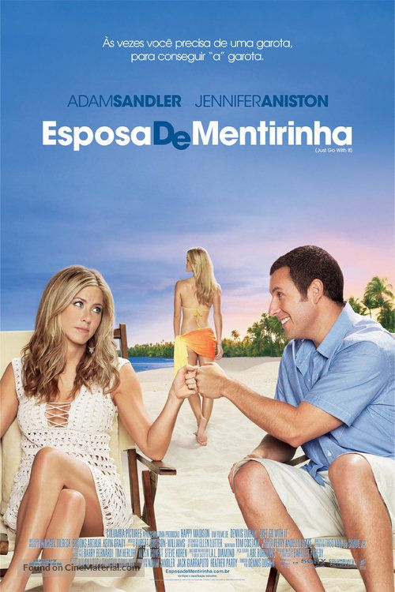

|  | Esposa De Mentirinha
Direção: Dennis Dugan
Roteiro Allan Loeb
Elenco: Adam Sandler, Jennifer Aniston, Brooklyn Decker
Infeliz em sua tentativa de casamento, Danny passa a vivenciar relacionamentos sem compromisso para driblar a carência. Assim, ele toca sua vida como cirurgião plástico bem-sucedido, tendo sua melhor amiga Katherine, mãe solteira de um casal, como fiel escudeira. Quando conhece a jovem Palmer e a paixão toma conta de ambos, ele inventa, para tentar conquistá-la, que é marido de Katherine, pai das crianças e que vai se separar. Assim começa uma verdadeira aventura amorosa recheada de confusões. |
|
Acesse mais em YouTube SESSÕES
|